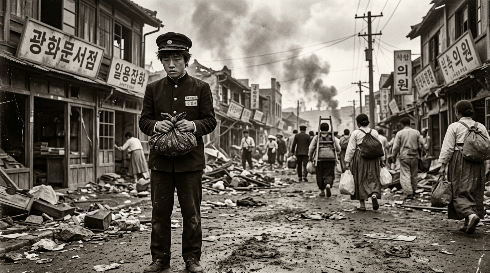
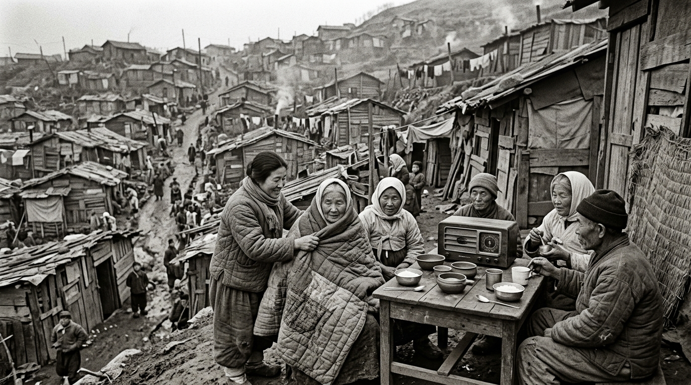
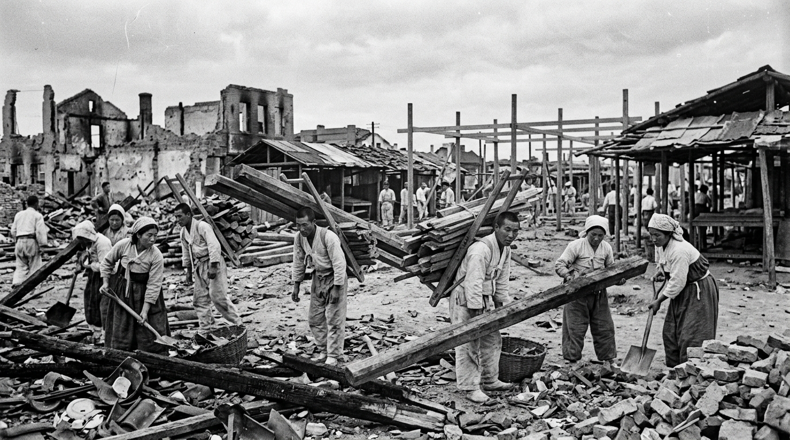
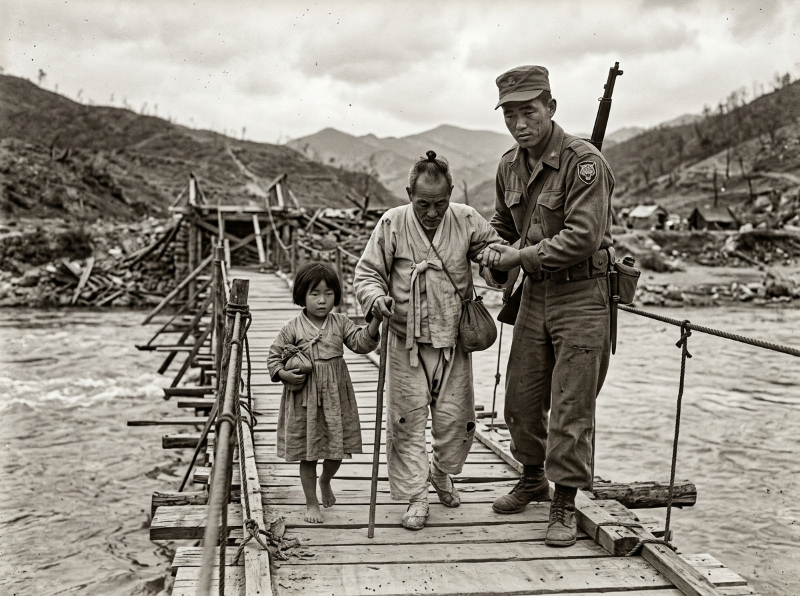
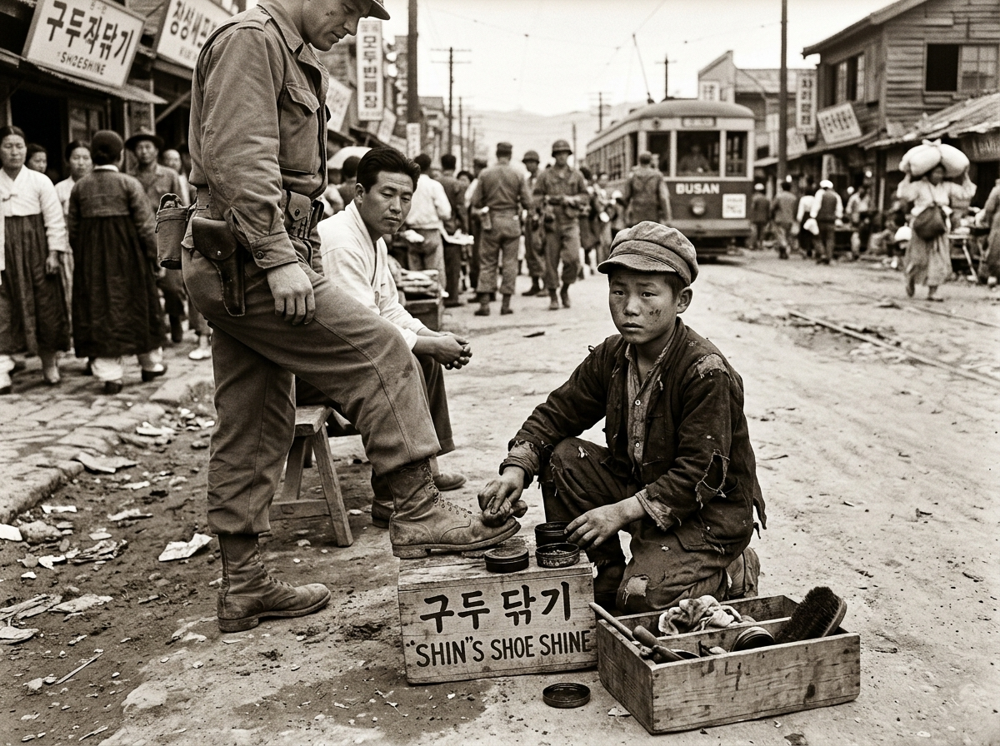
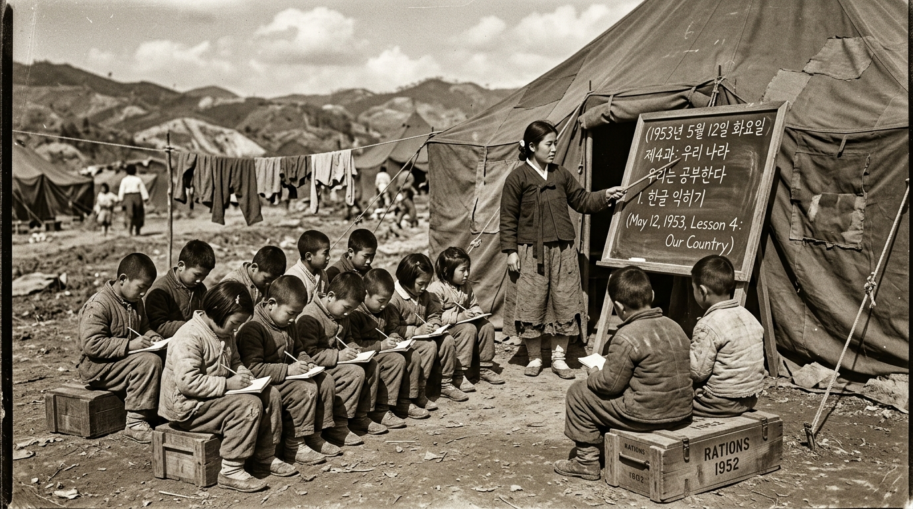

“1950년 6월.
평범했던 어느 날, 전쟁이 시작되었다.
가족은 흩어지고, 집과 학교, 일상도 모두 달라졌다.
나는 이제 선택해야 한다.
남을 것인가, 떠날 것인가. 누구와 함께할 것인가. 무엇을 지킬 것인가.”
역사 탐구자 신원 기록부 (피란민 대장)
역사의 현장 속으로 들어가기 전, 탐구자의 정보를 기록해 주세요. 당신의 선택은 1953년 휴전 이후 ‘어린이 평화 시민 임명장’에 담기게 됩니다.

“포성을 피해 닿은 부산의 언덕길, 눈보라 치는 판잣집 사이로 이웃들의 신음이 들려온다.
가진 것은 없었지만 서로의 온기를 나누지 않았다면 우리는 그 혹독한 겨울을 버텨낼 수 없었을 것이다.
생존을 위한 구호 물품을 전하고, 낡은 진공관 라디오의 주파수를 맞춰 외부의 평화 소식을 찾아야 한다.”
전시 긴급 구호물자 전달
아래 구호 물품을 마우스로 끌어서(드래그) 가장 절박한 처지에 놓인 이웃에게 전달해 주세요. (클릭하여 선택 후 전달도 가능합니다)
진공관 비상 라디오 주파수 수신
다이얼을 천천히 돌려 잡음을 걷어내고 정전 및 구호 소식을 전하는 긴급 평화 방송을 찾으세요. (역사 기록 주파수: 195.3 MHz)
피란민 수용 구역 통행 통제 중
두 가지 구호 미션을 모두 완수하면 다음 구역인 [재건의 광장] 통행 허가를 획득합니다.

“총탄과 화마가 휩쓸고 간 잿더미 위에서도 사람들은 결코 주저앉지 않았다.
부서진 목재를 지게에 얹어 나르고, 흙벽돌을 한 장씩 쌓아 올리며 다시 장터를 세웠다.
폐허를 희망으로 바꾼 힘은 법도 돈도 아닌, 시민들의 나눔과 굳건한 협동이었다.”
기록 보관함: 3대 재건 핵심 가치
아래 가치 패를 선택한 뒤, 우측 재건 결의록의 알맞은 조항에 배치하십시오.
1952년 마을 재건 공동 결의록
혼자만의 힘으로는 세울 수 없는 무너진 다리와 천막 교실을 이웃과 다 함께 힘을 모아(품앗이) 복구한다.
[클릭하여 알맞은 가치 패 배치]부족한 보급품과 식량을 힘없는 고아와 홀로 남은 이웃에게 먼저 베풀며 서로의 목숨을 지킨다.
[클릭하여 알맞은 가치 패 배치]전쟁의 참화를 가슴에 깊이 새기며, 원망과 갈등 대신 용서와 배려로 평화로운 일상을 지킨다.
[클릭하여 알맞은 가치 패 배치]1953년 7월 27일, 당신은 어떤 길을 걸어가겠습니까?
3년 1개월간 이어진 포성이 멎고 휴전 협정이 체결되었습니다. 폐허 위에서 대한민국을 다시 일으킨 4대 평화의 주역 중, 당신의 마음을 울리는 삶의 역할을 선택해 주십시오.

국군 장병
- 전선을 지키며 시민들이 안심하고 일상을 회복하도록 수호
- 파괴된 도로와 임시 교량을 가설하여 피란민들의 안전한 귀환 지원
- 부모를 잃은 전쟁 고아들을 부대 내에서 보호하고 식량 지원

구두닦이 소년
- 어린 나이에 무거운 구두통을 메고 가족의 생계를 억척스레 책임짐
- 거리의 더 어린 전쟁 고아들과 주먹밥을 아낌없이 나누어 먹음
- 절망적인 환경 속에서도 불굴의 의지로 훗날 국가 발전의 주역으로 성장
국제시장 상인
- 부산 깡통시장과 국제시장에서 맨주먹으로 상권을 일으켜 세움
- 돈 없는 이재민에게 곡식을 덤으로 쥐여주며 서민 경제의 젖줄 역할
- 공동체의 상처를 보듬고 상호 부조를 통해 생활 터전을 되살림

천막학교 교사
- 군용 천막과 가마니 바닥 위에서 배움의 끈을 놓지 않고 아이들을 가르침
- 전쟁의 공포에 짓눌린 학생들에게 평화와 희망의 가치를 일깨움
- 대한민국의 미래를 이끌어갈 인재들을 길러낸 든든한 등대
1953년의 희생이 일군 평화, 이제 우리가 이어갑니다
70여 년 전 시민들이 서로를 도우며 지켜낸 평화는 오늘날 우리의 일상이 되었습니다. 교실과 가정에서 내가 실천할 ‘작은 평화 서약’을 작성하고 나만의 평화 시민 임명장을 완성해 보세요.